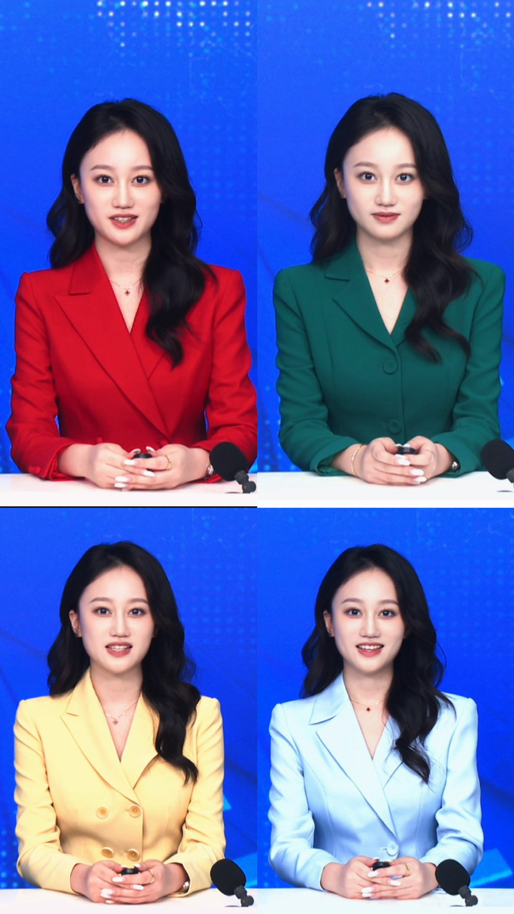
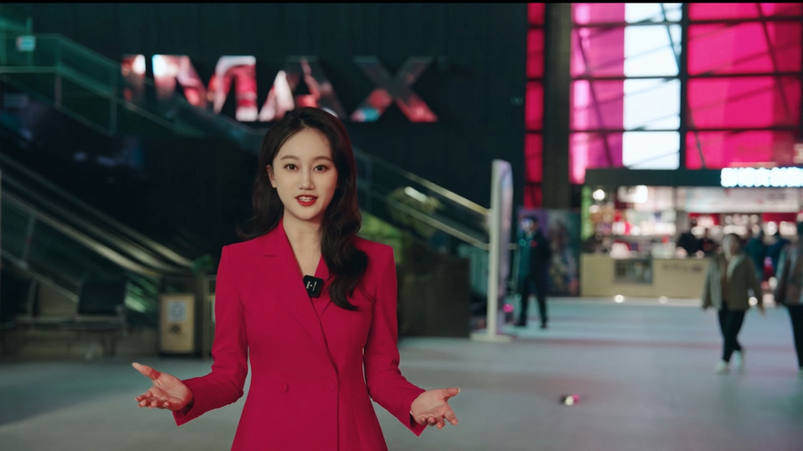

01 · HUBEI TV
《2025湖北省
《2025湖北省
大学生创业大赛》
作为首位大学生主持人，搭档著名主持人田野，参与现场录制与卫视播出。
现场主持 主持人田野
LIVE RECORDING / 01



A LITTLE ABOUT MY VOICE
在 2024 年高考中，我取得播音与主持专业四川省专业排名前十、综合排名第二的成绩。声音与表达，是我持续学习和实践的方向。
02 / ON CAMERA
作为首位大学生主持人，搭档著名主持人田野，参与现场录制与卫视播出。
担任首位大学生体验官，以出镜记者身份体验式报道文旅项目，作品于卫视播出。
上海戏剧学院第二届“讲好中国故事”大会 · 全英文主持
作为校友主持树德中学民乐团专场演出。
武汉大学新闻与传播学院《新闻主持与现场报道实践》课程期末个人小片，包含新闻播报、现场报道与新闻评论。
第31届大运会主题短片